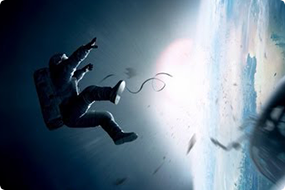

Побег из Шоушенка
Успешный банкир Энди Дюфрейн обвинен в убийстве собственной жены и ее любовника. Оказавшись в тюрьме под названием Шоушенк, он сталкивается с жестокостью и беззаконием, царящими по обе стороны решетки. Каждый, кто попадает в эти стены, становится их рабом до конца жизни. Но Энди, вооруженный живым умом и доброй душой, отказывается мириться с приговором судьбы и начинает разрабатывать невероятно дерзкий план своего освобождения.

Наркоз
Клай Бересфорд вынужден лечь под нож. Однако в процессе операции на сердце он неожиданно приходит в себя. Находясь в парализованном состоянии, будучи не в силах пошевелить ни рукой, ни ногой, он, тем не менее, чувствует каждое касание скальпеля к своей плоти…

Астрал
Джош и Рене переезжают со своими детьми в новый дом, но не успевают толком распаковать вещи, как начинаются странные события. Необъяснимо перемещаются предметы, в детской звучат странные звуки… Но в настоящий ужас приходят родители, когда их десятилетний сын Далтон впадает в кому. Все усилия врачей в больнице помочь мальчику безуспешны.

Гравитация
Доктор Райан Стоун, блестящий специалист в области медицинского инжиниринга, отправляется в свою первую космическую миссию под командованием ветерана астронавтики Мэтта Ковальски, для которого этот полет — последний перед отставкой. Но во время, казалось бы, рутинной работы за бортом случается катастрофа.
Шаттл уничтожен, а Стоун и Ковальски остаются совершенно одни; они находятся в связке друг с другом, и все, что они могут, — это двигаться по орбите в абсолютно черном пространстве без всякой связи с Землей и какой-либо надежды на спасение.
Бладшот
Военный Рэй Гаррисон возвращается из очередной горячей точки к любимой красавице-жене. Супруги проводят отпуск в Европе, но счастье длится недолго — террористы, не сумев вытянуть из Рэя нужную им информацию, убивают жену, а затем и его самого. Но вскоре корпорация RST возвращает его к жизни. Армия нанороботов в крови превратила Рэя в бессмертного Бладшота, и теперь солдат наделен сверхсилой и способностью мгновенно самоисцеляться, вот только память оставляет желать лучшего. Но вскоре воспоминания о последних мгновениях жизни возвращаются, и Бладшот отправляется мстить за смерть жены.
Пираты Карибского моря
Жизнь харизматичного авантюриста, капитана Джека Воробья, полная увлекательных приключений, резко меняется, когда его заклятый враг — капитан Барбосса — похищает корабль Джека, Черную Жемчужину, а затем нападает на Порт Ройал и крадет прекрасную дочь губернатора, Элизабет Свонн. Уилл Тернер, вместе с Джеком возглавляет спасательную экспедицию на самом быстром корабле Британии, в попытке вызволить девушку из плена и заодно отобрать у злодея Черную Жемчужину. Вслед за этой парочкой отправляется амбициозный коммодор Норрингтон, который к тому же числится женихом Элизабет...
Чёрная Вдова
Наташе Романофф предстоит лицом к лицу встретиться со своим прошлым. Чёрной Вдове придется вспомнить о том, что было в её жизни задолго до присоединения к команде Мстителей, и узнать об опасном заговоре, в который оказываются втянуты её старые знакомые — Елена, Алексей, также известный как Красный Страж, и Мелина.
Харли Квинн
Харли Квинн рассталась с Джокером и через некоторое время сообщила об этом всему Готэму, взорвав тот самый химзавод. Девушка больше не тоскует по несостоявшимся отношениям — ей некогда, так как она также потеряла неприкосновенность, и теперь за ней охотятся разной степени криминализованности граждане, желающие отомстить. А в это время ставший крёстным отцом Готема Роман Сайонис очень жаждет вернуть пропавший бриллиант, который стащила у его подручного малолетняя карманница.
Темный рыцарь
Бэтмен поднимает ставки в войне с криминалом. С помощью лейтенанта Джима Гордона и прокурора Харви Дента он намерен очистить улицы от преступности, отравляющей город. Сотрудничество оказывается эффективным, но скоро они обнаружат себя посреди хаоса, развязанного восходящим криминальным гением, известным испуганным горожанам под именем Джокер.
Матрица
Жизнь Томаса Андерсона разделена на две части: днём он — самый обычный офисный работник, получающий нагоняи от начальства, а ночью превращается в хакера по имени Нео, и нет места в сети, куда он не смог бы дотянуться. Но однажды всё меняется — герой, сам того не желая, узнаёт страшную правду: всё, что его окружает — не более, чем иллюзия, Матрица, а люди — всего лишь источник питания для искусственного интеллекта, поработившего человечество. И только Нео под силу изменить расстановку сил в этом чужом и страшном мире.